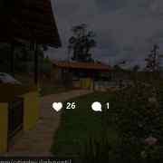

SANTA BÁRBARA • BARÃO DE COCAIS • MG
Seu próximo
momento especial
começa aqui.
Uma experiência de temporada às margens da Represa do Peti, feita para desacelerar, aproveitar e viver bons momentos.
O SÍTIO
Um lugar para
viver o tempo.
O Sítio do Julinho fica às margens da Represa do Peti, a aproximadamente 6 km de Santa Bárbara e Barão de Cocais.
O espaço acomoda até 15 pessoas e reúne 3 quartos, 3 banheiros, piscina e uma área gourmet com churrasqueira, fogão a lenha e fogo de chão.
A EXPERIÊNCIA
Escolha um detalhe.
Descubra o lugar.
Toque nos cards para explorar os espaços apresentados.
FOTOS
Veja o Sítio
de perto.
Fotos reais disponíveis no projeto. Toque para ampliar.
DO PETI
LOCALIZAÇÃO
Natureza por
perto.
O Sítio do Julinho está às margens da Represa do Peti, aproximadamente 6 km de Santa Bárbara e Barão de Cocais.
Como chegar ↗ Instagram @sitio_do_julinho ↗DISPONIBILIDADE
Quer viver essa
experiência?
Consulte sua data, quantidade de pessoas, valores e condições diretamente com o proprietário.
Consultar disponibilidade ↗